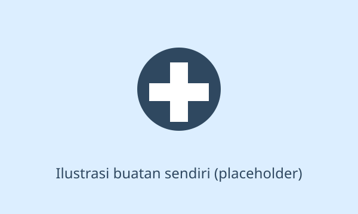

Layanan Kesehatan Dekat, Daftar Tanpa Antre
Selamat datang di Klinik Pratama “Sehat Nusantara”.
Lihat layanan dan jadwal dokter, lalu daftar kunjungan secara online dari telepon seluler Anda.
Daftar Online
Mengapa Mendaftar Online?
- Tanpa antre fisik. Pilih tanggal kunjungan dan dapatkan nomor antrean.
- Jadwal dokter jelas. Cek hari dan jam praktik sebelum datang.
- Data lebih akurat. Formulir memeriksa NIK dan nomor HP saat diisi.
Poliklinik Kami
Alur Pendaftaran
- Pilih poliklinik dan dokter.
- Isi formulir pendaftaran.
- Periksa ringkasan dan catat nomor antrean.
- Datang ke klinik sesuai tanggal kunjungan.
Jam Operasional
| Poliklinik | Jam layanan |
|---|---|
| Poli Umum | Senin–Sabtu, 08.00–17.00 WIB |
| Poli Gigi | Senin–Jumat, 09.00–17.00 WIB |
| Poli Kesehatan Ibu dan Anak | Senin–Kamis, 08.00–13.00 WIB |
| Poli Gizi | Rabu–Sabtu, 08.00–16.00 WIB |